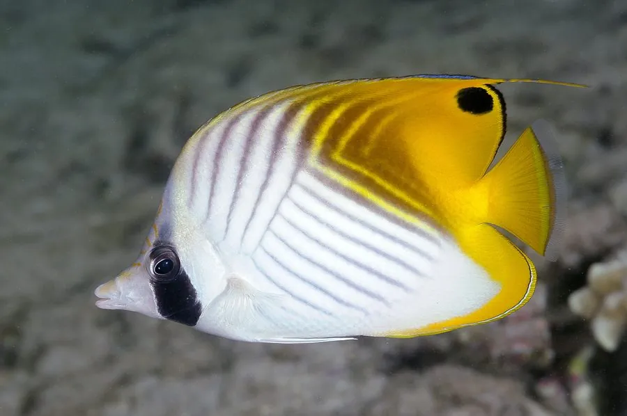

鱼类 · 动物界
扬幡蝴蝶鱼 Chaetodon auriga

体侧有深色斜纹、背鳍末端拖着白色长丝的热带珊瑚礁鱼，成对活动，以珊瑚虫、藻类和小型无脊椎动物为食。
- 分类
- 门脊索动物门纲硬骨鱼纲目鲈形目科蝴蝶鱼科属蝴蝶鱼属
- 栖息环境
- 热带珊瑚礁区，水深 1–40 m，常在珊瑚丛和礁石间活动
- 地理分布
- 印度洋—太平洋热带海域，从红海、东非到日本南部、澳大利亚和夏威夷，中国南海及台湾周边有分布
- 保护级别
- 暂无评估；中国未列入国家重点保护野生动物名录
物种志
扬幡蝴蝶鱼体呈卵圆形、侧扁，吻部尖长，适合在珊瑚缝隙中取食。体色银白或淡黄，体侧有数条深色斜纹，背鳍后部上方拖着一根白色的长丝，像一面飘扬的旗帜，因此得名。成鱼体长一般 15–20 cm，最大约 23 cm。
扬幡蝴蝶鱼分布于印度洋—太平洋的热带珊瑚礁，从红海、东非到日本南部、澳大利亚和夏威夷，中国南海及台湾周边有分布。它栖息于礁区，水深 1–40 m，食性较杂，吃珊瑚虫、藻类、小型甲壳类和多毛类，常成对活动，在礁区有相对固定的活动范围。繁殖时成对产卵，卵为浮性，随水流漂流。蝴蝶鱼科鱼类多靠体侧的花纹识别同类，不同种类的花纹差别很大，这也是它们分类的重要依据。扬幡蝴蝶鱼的背鳍长丝在游动时随水流摆动，十分漂亮，因此也是水族市场上常见的观赏鱼。目前它没有IUCN 的正式评估，中国未将其列入国家重点保护野生动物名录。
形态与习性
- 食性杂食性，吃珊瑚虫、藻类、小型甲壳类和多毛类
- 体长一般 15–20 cm，最大约 23 cm
- 栖息深度珊瑚礁区水深 1–40 m
- 背鳍长丝背鳍后部上方拖着一根白色长丝，像飘扬的旗帜
- 繁殖成对产卵，卵为浮性
- 习性常成对活动，在礁区有相对固定的活动范围
趣味知识
- 扬幡蝴蝶鱼背鳍末端拖着一根白色长丝，游动时像一面小旗。
- 它常成对活动，在珊瑚礁中有相对固定的活动范围。
- 蝴蝶鱼靠体侧的花纹识别同类，不同种类的花纹差别很大。
生态关系
- 栖息 ← 鹿角珊瑚 珊瑚礁为鱼类提供栖息与庇护